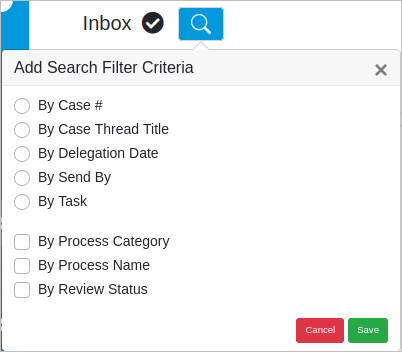
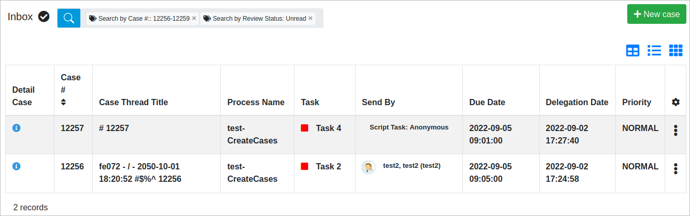
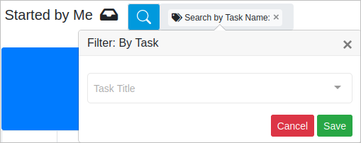
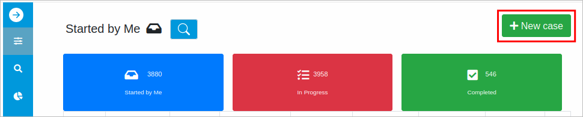
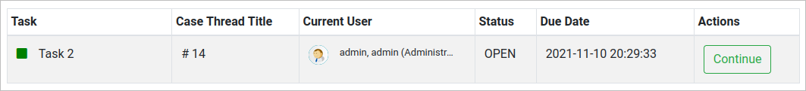

Please rate how useful you found this document:
- Login
- How to create your first process
- Managing Users
- Roles
- Using Conditions
- Definition of a process and its elements.
- Dynaforms
- Input Documents
- Output Documents
Advanced Features:
In ProcessMaker, a case is an instance of a process. In other words, a process represents the map of work to do and a case is a new instance that follows this map. A case runs through several activities (tasks or sub-processes) within the process. For example, inside an insurance process within a hospital, each insurance claim for the treatment of a patient is represented by a single case.
Each case in ProcessMaker has a unique ID which is a 32 digit hexadecimal number to uniquely identify the process, and a case number which counts cases starting from 1.
Note: To avoid overwriting issues, use a feature that prevents opening multiple browser instances of ProcessMaker. For more information about Blocking Multiple Browser Instances, please follow this link.
The Home tab displays the Main Menu at the left side of the screen, where you can manage your cases as well as view all the options available when running a case.
The main ProcessMaker Menu displays the following sections:
HOME
TASKS
SUPERVISOR TASKS
DOCUMENTS

ProcessMaker 3.7.0 and later has a new view for the Home option. It is not available for ProcessMaker Mobile. The new Home view is similar to the Enhanced Home Experience (EHX) plugin, which is not compatible with ProcessMaker 3.7.0. However, the EHX plugin has features which are not available from the new ProcessMaker 3.7.0 Home view. If any of the EHX features that do not have corresponding features in the Home view are mission-critical to your ProcessMaker instance, then do not upgrade to ProcessMaker 3.6.0 until a compatible EHX plugin is available.
Then, ProcessMaker 3.7.0 and later has the following changes in the Main Home:
The case status trays available from ProcessMaker 3.2.x until ProcessMaker 3.5.x (Inbox, Draft, Participated, Unassigned, Paused) have been redesigned in the following way:


Search cases for My Cases and Tasks trays. To search cases, click the  search icon to access the Add Search Filter Criteria pop up screen.
search icon to access the Add Search Filter Criteria pop up screen.
Note: As of ProcessMaker 3.7.7, search cases by clicking the search icon. The tag container displays if it has a filter criteria, otherwise, it does not displays. Click the search tag container to see and set defined filter criterias.
The search options available are:
| My Cases | Tasks |
|---|---|
|
 |
Select one of the following options and combinations:


Note: If entering a case range, enter in ascending order like 3-6. Otherwise, 6-3 is considered invalid and the case list displays all cases. Use the Sort by Case Number for ascending or descending order.
env.ini setting is configured differently.


Note: If searching cases by the today date, it is recommended to search by using the today date in the From setting. If searching cases by a specific date until the today date, it is recommended to search using a future date different to the today date in the To setting.
Note: If searching cases by the today date, it is recommended to search by using the today date in the From setting. If searching cases by a specific date until the today date, it is recommended to search using a future date different to the today date in the To setting.



Note: The By Review Status filter is available in the Draft tray as read tasks, then, the By Review Status filter is not functional. The By Review Status filter is available in the Unassigned tray as unread tasks.
To add the filter criteria, after selecting filter options, then click Save.
The Filter pop up displays. Enter a value according to the available options. Then, click Save. To dismiss this search criteria option, close the Filter: pop up window or click Cancel.

The case list displays the filter results, otherwise, the results are not displayed.
Note: The search is restricted by the rule criteria determined by the selected options and the search is per user account.
Users who are assigned to a task after a start event are able to see the list of processes that contain new tasks assigned to them. Start cases through the +New Case button in the My Cases, Advanced Search, Inbox, Draft, Paused and Unassigned trays.
Click the +New Case button, the list displays the tasks assigned to the current user.
To start a case click on the name of the process (which also includes the name of the first task).

Processes can also be searched by typing the name of the process and clicking the desired process in the filtered list.
Available Version: As of ProcessMaker 3.7.0
In the My Cases, Advanced Search, Inbox, Draft, Paused and Unassigned trays, sort cases list by the case number (Case #) and it is saved for one user account.
Follow the next steps to order cases by number:
1. Go to one of the My Cases, Advanced Search, Inbox, Draft, Paused or Unassigned tray.
2. In the Case # column header, click the icon  . The cases list displays in ascending order and the clear button displays.
. The cases list displays in ascending order and the clear button displays.

3. In the Case # column header, click the icon for descending sort.
4. In the Case # column header, click the Clear button to reset the list order.
View the information about a specific case in the following ways:
The Case Details screen displays the following:

The task information displays the following:
Actions: The actions depend on the privileges granted to the user. If the user is the task owner, he can access the Open Task or Continue (use Continue only if the case is in Draft), Unpause or Claim Task when the task is unassigned (after the confirmation of the action in the pop-up window, the task form opens. The Open and Continue options will only open the Task Form).
If the user is a supervisor and is not the owner of the task, he only has access to the following actions: Open (to edit the form), and Cancel. As of ProcessMaker 3.8.1, supervisors has access to the Reassign and Assign actions.
In the Tasks, go directly to the action by double-clicking the task row. As of ProcessMaker 3.8.2, in the My Cases and the Advanced Search, also go directly to the action by double-clicking the task row. When double-clicking, the following runs:
The Summary displays the following information about the case:

The Status tab displays the Case Properties and the Current Task(s) Properties:

The Custom Information tab displays the Dynaform summary if available.

The Process Map tab displays a map of the current process.

The Case History tab displays a list of tasks within the process.

The Change Log tab displays the variables within each task with their previous values and current values.
Warning: Change Log does not register variable values of the PMFNewCase().

 Current Stable Mobile Version: 2.4.0 | Release Notes
Current Stable Mobile Version: 2.4.0 | Release Notes
Work on your processes using a simple, portable interface on your IOS and Android devices with the new ProcessMaker mobile version. This app offers a unique user experience by providing the power to manage cases from the app, to see the current case statuses, and to use specific features, such as QR code scanner, finger signatures, geo-location tagging, audio, image, and video, and much more. Log on to ProcessMaker Mobile via the SAML Authentication Enterprise Plugin. React Native updated.
Designer Experience - Creating a New ProcessThis guide explains how to create your first process from scratch using BPMN elements. Moreover, this guide will help you learn how to use ProcessMaker version 3. In this guide the "Purchase Request" process will be created. | End User Experience - Running a CaseThis documentation explains how end users can execute and manage their cases, as well as the options for users when running a case. |